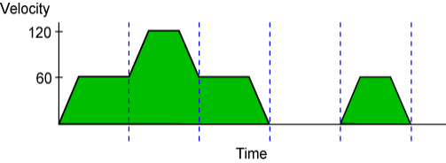

|
Was this information helpful? Yes No |
Copyright |
|
You are here: CNC Option > G-Code and M-Code Programming > Motion > Velocity Profiling > G108 Command (Enable Velocity Profiling and Lookahead)
|
| Syntax: | G108 |
|
Example: |
G108 ; Start of a velocity profiled sequence |
Use the G108 command to blend multiple coordinated motion commands into one continuous motion path. In this velocity profiling mode, the controller does not decelerate to zero between consecutive coordinated moves. During the move sequence, you can change the feedrate (velocity) by using the F command (or the E command for dependent axes) if necessary. The axes will increase or decrease in speed in a coordinated way so the programming path is maintained.
G108 command is modal and remains in effect until G109 command is issued. The state of this modal command is shown by Bit 5 of the TaskMode status item.
Without velocity profiling mode, the controller always decelerates to zero velocity between consecutive coordinated moves. The example program and figure that follow show the effects of velocity profiling.
' Enable velocity profiling mode. G108 ' Enable incremental programming mode. G91 ' Set the vector feedrate to 60. F60. ' Move the X axis 1.0. G1 X1. ' Set the vector feedrate to 120. F120. ' Move the X axis 2.0. G1 X2. ' Set the vector feedrate to 60. F60. ' Move the X axis again to 1.0. G1 X1. ' Dwell for one second. G4 P1 ' This move accelerates from 0 velocity because it follows a G4 command. G1 X1.

When you use G108 mode:
|
Note: Use the G9 command on a coordinated motion line to override the G108 setting only for that line. |
|
Note: Do not use the SLICE command while performing velocity profiling with a G108 - G109 block. Doing so will result in an error. |
|
Note: G108 mode does not blend PVT commands with G1, G2, or G3 commands. After the final PVT move in a sequence, the controller will always instantaneously return to zero velocity, even if G108 is active. To prevent axis jerking, set the final PVT move to return to zero velocity. G1, G2, and G3 commands decelerate to zero before proceeding to a PVT command, even if G108 is active. |
|
Was this information helpful? Yes No |
Copyright |
 2001-
2001-